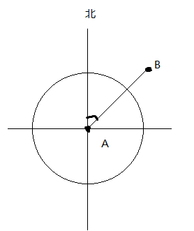

根据两个已知经纬度坐标点A、B计算B相对A与正北方向夹角 如图

js代码如下：
1 2 3 4 5 6 7 8 9 10 11 12 13 14 15 16 17 18 19 20 21 22 23 24 25 26 27 28 29 30 31 32 33 34 35 36 37 38 39 40 41 42 43 44 45 46 47 48 49 50 51 52 53 54 55 56 57 58 59 60 61 62 63 64 65 66 67 68 69 70 71 72 73 74 75 76 77 78 79 80 81 82 /** * 获取两个经纬度坐标正北方向夹角 * @param {Array} o_latlngs 原点经纬度坐标 [经度, 纬度] * @param {Array} latlngs 经纬度坐标 * @return {Number} 返回角度 */ function getTwoPointAngle(o_latlngs, latlngs) { let A = new MyLatLng(o_latlngs[0], o_latlngs[1]); let B = new MyLatLng(latlngs[0], latlngs[1]); // console.log(getAngle(B, A)); return getAngle(B, A); } /** * 求B点经纬度 * @param A 已知点的经纬度， * @param distance AB两地的距离 单位km * @param angle AB连线与正北方向的夹角（0~360） * @return B点的经纬度 */ function getMyLatLng(A, distance, angle) { let dx = distance * 1000 * Math.sin(Math.toRadians(angle)); let dy = distance * 1000 * Math.cos(Math.toRadians(angle)); let bjd = (dx / A.Ed + A.m_RadLo) * 180.0 / Math.PI; let bwd = (dy / A.Ec + A.m_RadLa) * 180.0 / Math.PI; return new MyLatLng(bjd, bwd); } /** * 获取AB连线与正北方向的角度 * @param A A点的经纬度 * @param B B点的经纬度 * @return AB连线与正北方向的角度（0~360） */ function getAngle(A, B) { let dx = (B.m_RadLo - A.m_RadLo) * A.Ed; let dy = (B.m_RadLa - A.m_RadLa) * A.Ec; let angle = 0.0; angle = Math.atan(Math.abs(dx / dy)) * 180.0 / Math.PI; let dLo = B.m_Longitude - A.m_Longitude; let dLa = B.m_Latitude - A.m_Latitude; if (dLo > 0 && dLa <= 0) { angle = (90.0 - angle) + 90; } else if (dLo <= 0 && dLa < 0) { angle = angle + 180.0; } else if (dLo < 0 && dLa >= 0) { angle = (90.0 - angle) + 270; } return angle; } class MyLatLng { constructor(lng, lat) { const Rc = 6378137; // 赤道半径 const Rj = 6356725; // 极半径 // 经度转为度分秒 this.m_LoDeg = lng; this.m_LoMin = ((lng - this.m_LoDeg) * 60); this.m_LoSec = (lng - this.m_LoDeg - this.m_LoMin / 60.0) * 3600; // 纬度转为度分秒 this.m_LaDeg = lat; this.m_LaMin = ((lat - this.m_LaDeg) * 60); this.m_LaSec = (lat - this.m_LaDeg - this.m_LaMin / 60.0) * 3600; this.m_Longitude = lng; this.m_Latitude = lat; this.m_RadLo = lng * Math.PI / 180.0; // 经度弧度 this.m_RadLa = lat * Math.PI / 180.0; // 纬度弧度 this.Ec = Rj + (Rc - Rj) * (90.0 - this.m_Latitude) / 90.0; this.Ed = this.Ec * Math.cos(this.m_RadLa); } } exports = module.exports = { getTwoPointAngle: getTwoPointAngle };
调用：
1 2 3 4 let A = [108.91845703124999, 34.379712580462204]; let B = [111.51123046875, 37.24782120155428]; let rst = getTwoPointAngle(B, A); console.log(rst); // 36.726042683201875
计算结果为B相对A与正北方向的夹角
角度换算为东南西北： 1 2 3 4 5 6 7 8 9 10 11 12 13 14 15 16 17 18 19 20 21 22 23 24 function _getDirection(angle) { let direction = ''; let dirs = ['北', '东北', '东', '东南', '南', '西南', '西', '西北']; let x = parseFloat(angle || 0) * 10 / 225; // 360等分16份 if (x <= 1 || x > 15) { direction = dirs[0]; } else if (x > 1 && x <= 3) { direction = dirs[1]; } else if (x > 3 && x <= 5) { direction = dirs[2]; } else if (x > 5 && x <= 7) { direction = dirs[3]; } else if (x > 7 && x <= 9) { direction = dirs[4]; } else if (x > 9 && x <= 11) { direction = dirs[5]; } else if (x > 11 && x <= 13) { direction = dirs[6]; } else if (x > 13 && x <= 15) { direction = dirs[7]; } return direction; }
换算上面计算出来的值：
_getDirection(36.726042683201875); // "东北"